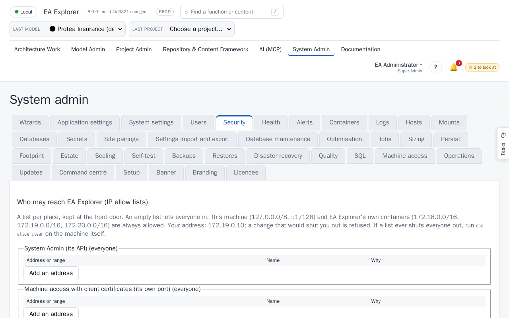

Limit who can reach EA Explorer
For: System Admin
IP allow lists: only the addresses you list may reach EA Explorer, its sign-in pages, System Admin, the AI connector or the machine port.

#/admin/securityWhy do this
An allow list limits which network addresses may reach the site, the sign-in pages, the admin screens or the AI server. It is a strong extra layer of protection where the repository holds sensitive information.
Security in EA Explorer is a set of layers: who can reach it, how they prove who they are, what their roles allow, and secrets no one can read. Each layer is set on the screens, and nothing here ever shows a secret's value.
In TOGAF terms: Outside the method: this protects the repository and who reaches it. See EA Explorer and the TOGAF Standard.
The goal: Only the networks you trust can reach EA Explorer.
Before you start You need the Super Admin or IT Admin role, and the addresses or ranges your people come from (for example the office's 10.20.0.0/16).
Steps
- Open System Admin › Security, Allowed addresses.
- Each place has its own list: site (everything), signin (the sign-in pages), admin (System Admin), mcp (the AI connector) and machine (the client-certificate port). An empty list lets everyone in.
- Add an address or range with a name and why, then Save. It applies at once, without a restart.
Check it worked
From an address not on the list, the place answers with a refusal. System Admin › Security shows the addresses refused.
If something goes wrong
- A change that would shut you out is refused on the screen, so you cannot lock yourself out.
- Everyone is locked out anyway (for example the office's address changed): on the machine,
eax allow clearempties every list, oreax allow add site <address>lets one in. The machine itself and EA Explorer's own containers are always allowed.